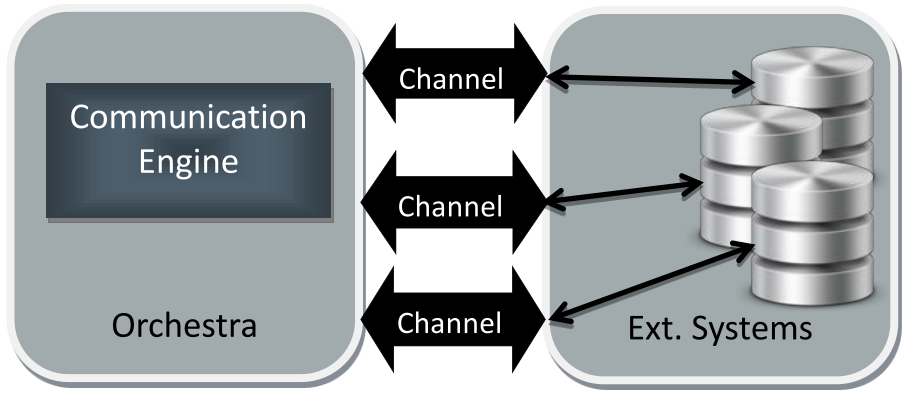

Communication Engine

Topic content
The communication engine is responsible for connecting Orchestra with external systems. Since a lot of different external systems exist, the communication engine has to provide a numerous set of channels that are used for connecting and communicating with external systems. A channel is an mediator that translates between internal Orchestra data structures and the the representation of the external formats and protocols.

Within Orchestra two general types of channels are distinguished:
Inbound Channels
Inbound channels are used whenever an external system wants to send data to Orchestra. Whenever such data is received, Orchestra has to start the processing on basis of predefined process models. In this case, a inbound channel waits since a sort of external event occurs. When this event is recognized, the channel has to read the external data and create appropriate Orchestra messages. After that data is received, a process instance is created that has to process the ingoing data.
Examples for external events are
•a new file in a ingoing directory
•a new entry in a database
•a SAP IDOC that is sent to Orchestra.
* an EMAIL sent to a mail account
Message oriented channels take the external data and create directly Orchestra messages from the external representation.
Stream or byte oriented channels are used when ever the data is transferred in a byte oriented manner and a file format has to be applied in order to generate the structured representation of the data. For example, when a file channel recognizes an ingoing file, a csv-filter (DeSerializer) has to be applied in order to get the structured representation of the data. All format handles within Orchestra are defined as re-usable components that are available in all channels that have to handle formats.
Outbound Channels
Outbound channels are used when Orchestra wants to send data to an external system. The main task of an outbound channel is the translation of a Orchestra message to the format and protocol of the external system. Also outbound channels can be divided into message and stream oriented channels. In the latter case, a message will be written to an output format depending on a configured serializer. For example, when a message has to be written as csv-file, a csv-Serializer has to be applied that transforms the Orchestra data to the csv format. All serializers within Orchestra are defined as re-usable components that are available in all channels that have to handle formats.